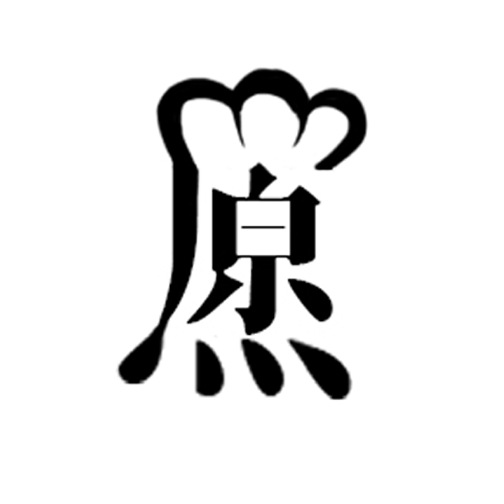

原OSEP
現代商品大多過度包裝，對於外觀的精緻度有時勝過物品本身的質量，本商店的logo「原」，就是希望能還原物品最根本的質量，通過簡單的玻璃罐承裝販賣物，與logo簡約的線條設計形成呼應，熱愛城市生活，關心城市的過去、現在與未來，我們認為一個舒適且充滿創意的城市生活是一個不斷充滿變化的狀態，不僅僅是政府的計畫，也是在城市生活者們每日的集體創作。
原字餐廳貼
「自然即生活，生活即天然。」
從永續發展的角度為核心，將店內沒販售完的食材進行烹煮，使用食材幾乎為在地農產品，減少運送過程中的碳足跡，將安全的食材送至餐桌並落實綠色飲食生活、讓農民開心生產安全食材讓餐廳放心製作美味料理民眾也能安心品嚐食材原味。是無包裝商店結合餐廳最主要推行的理念。
放上「原」標章的原因是對食材永續的認證，通過簡單的調味讓食物還原最真實的味道，創立初衷，即是讓有理念的綠色餐廳不再獨自打拼，可透過組織的力量，讓綠色餐廳真正走向可持續經營的道路。
插機器人: 
原型商店擴增計畫 © 2023
組員: 侯沛堯、曾昇富、夏韻茹、陳靖薇